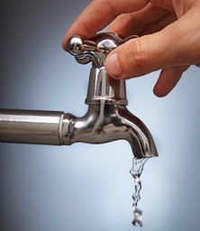
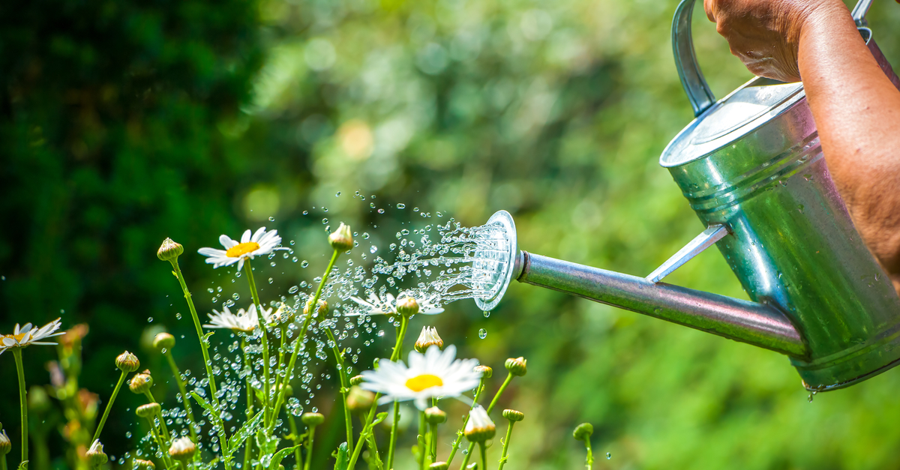
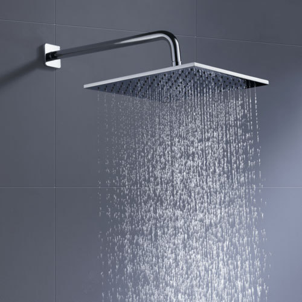
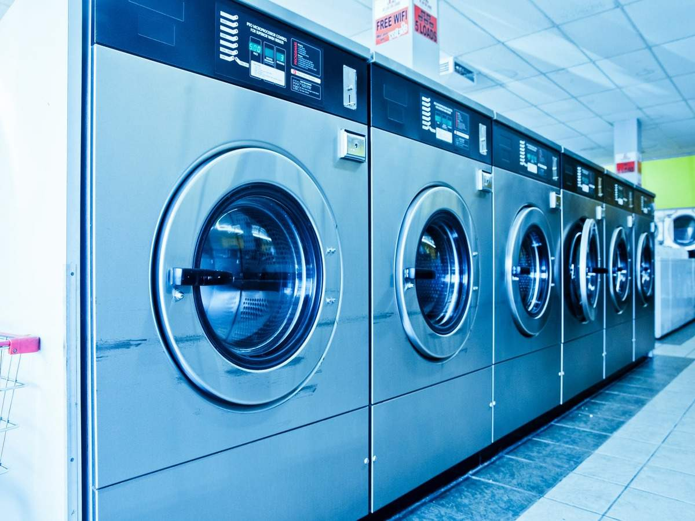
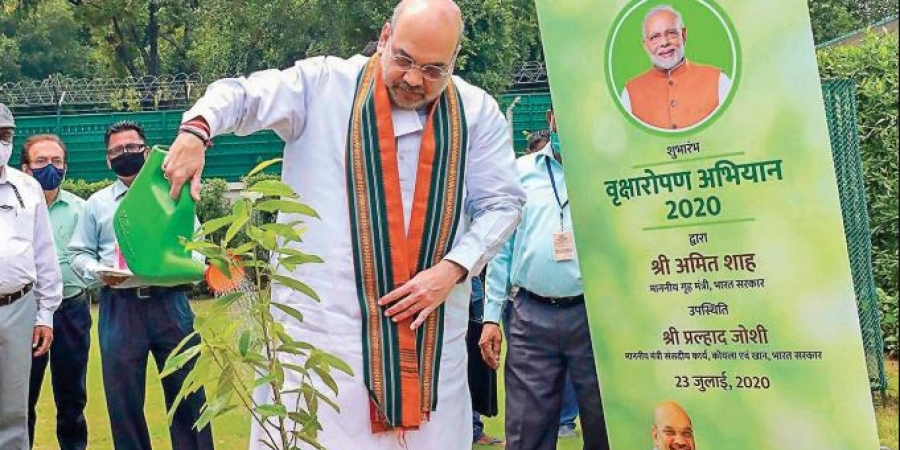

𝘽𝙮 𝙩𝙝𝙚 𝙖𝙢𝙤𝙪𝙣𝙩 𝙤𝙛 𝙬𝙖𝙩𝙚𝙧 𝙩𝙝𝙖𝙩 𝙬𝙚 𝙪𝙨𝙚 𝙩𝙤𝙙𝙖𝙮, 𝙬𝙚 𝙘𝙖𝙣 𝙝𝙖𝙧𝙙𝙡𝙮 𝙨𝙖𝙮 𝙩𝙝𝙖𝙩 𝙩𝙝𝙚𝙧𝙚 𝙬𝙞𝙡𝙡 𝙗𝙚 𝙥𝙡𝙚𝙣𝙩𝙮 𝙬𝙖𝙩𝙚𝙧 𝙛𝙤𝙧 𝙩𝙝𝙚 𝙪𝙥𝙘𝙤𝙢𝙞𝙣𝙜 𝙜𝙚𝙣𝙚𝙧𝙖𝙩𝙞𝙤𝙣.
𝙒𝙚 𝙟𝙪𝙨𝙩 𝙪𝙨𝙚 𝙬𝙖𝙩𝙚𝙧 𝙘𝙖𝙧𝙚𝙡𝙚𝙨𝙨𝙚𝙡𝙮, 𝙚𝙫𝙚𝙣 𝙖𝙛𝙩𝙚𝙧 𝙠𝙣𝙤𝙬𝙞𝙣𝙜 𝙩𝙝𝙖𝙩 𝙞𝙩 𝙞𝙨 𝙤𝙣𝙚 𝙤𝙛 𝙩𝙝𝙚 𝙗𝙖𝙨𝙞𝙘 𝙣𝙚𝙚𝙙𝙨 𝙤𝙛 𝙡𝙞𝙫𝙚𝙡𝙞𝙝𝙤𝙤𝙙 𝙖𝙣𝙙 𝙬𝙚, 𝙩𝙝𝙚 𝙝𝙪𝙢𝙖𝙣𝙨 𝙖𝙧𝙚 𝙬𝙝𝙮 𝙨𝙩𝙞𝙡𝙡 𝙖𝙡𝙞𝙫𝙚 𝙤𝙣 𝙩𝙝𝙚 𝙥𝙡𝙖𝙣𝙚𝙩 𝙀𝙖𝙧𝙩𝙝.
𝙄𝙛 𝙬𝙚 𝙪𝙣𝙞𝙩𝙚 𝙖𝙣𝙙 𝙘𝙤𝙣𝙩𝙧𝙞𝙗𝙪𝙩𝙚 𝙩𝙤𝙜𝙚𝙩𝙝𝙚𝙧 𝙩𝙤𝙬𝙖𝙧𝙙𝙨 𝙨𝙖𝙫𝙞𝙣𝙜 𝙬𝙖𝙩𝙚𝙧 𝙖𝙣𝙙 𝙪𝙨𝙞𝙣𝙜 𝙞𝙩 𝙘𝙖𝙧𝙚𝙛𝙪𝙡𝙡𝙮, 𝙬𝙚 𝙬𝙞𝙡𝙡 𝙡𝙚𝙖𝙙 𝙩𝙤𝙬𝙖𝙧𝙙 𝙖 𝙗𝙧𝙞𝙜𝙝𝙩 𝙛𝙪𝙩𝙪𝙧𝙚.
𝙃𝙚𝙧𝙚 𝙖𝙧𝙚 𝙨𝙤𝙢𝙚 𝙨𝙞𝙢𝙥𝙡𝙚 𝙥𝙧𝙖𝙘𝙩𝙞𝙘𝙚𝙨 𝙨𝙤 𝙩𝙝𝙖𝙩 𝙬𝙚 𝙘𝙖𝙣 𝙘𝙤𝙣𝙨𝙚𝙧𝙫𝙚 𝙩𝙝𝙚 𝙪𝙨𝙚 𝙤𝙛 𝙬𝙖𝙩𝙚𝙧:
1.

𝙒𝙚 𝙢𝙪𝙨𝙩 𝙘𝙡𝙤𝙨𝙚 𝙩𝙝𝙚 𝙩𝙖𝙥𝙨 𝙖𝙛𝙩𝙚𝙧 𝙩𝙖𝙠𝙞𝙣𝙜 𝙗𝙖𝙩𝙝 𝙤𝙧 𝙗𝙧𝙪𝙨𝙝𝙞𝙣𝙜 𝙤𝙪𝙧 𝙩𝙚𝙚𝙩𝙝 𝙤𝙧 𝙬𝙖𝙨𝙝𝙞𝙣𝙜 𝙝𝙖𝙣𝙙𝙨. 𝙄𝙩𝙨 𝙩𝙝𝙚 𝙢𝙤𝙨𝙩 𝙗𝙖𝙨𝙞𝙘 𝙢𝙚𝙩𝙝𝙤𝙙 𝙩𝙤 𝙘𝙤𝙣𝙨𝙚𝙧𝙫𝙚 𝙬𝙖𝙩𝙚𝙧. 𝙄𝙩'𝙨 𝙤𝙛𝙩𝙚𝙣 𝙩𝙝𝙖𝙩 𝙬𝙚 𝙛𝙤𝙧𝙜𝙚𝙩 𝙩𝙤 𝙩𝙪𝙧𝙣 𝙤𝙛𝙛 𝙩𝙝𝙚 𝙩𝙖𝙥𝙨 𝙖𝙣𝙙 𝙩𝙝𝙚 𝙬𝙖𝙩𝙚𝙧 𝙛𝙡𝙤𝙬𝙞𝙣𝙜 𝙩𝙝𝙧𝙤𝙪𝙜𝙝 𝙩𝙝𝙚 𝙩𝙖𝙥𝙨 𝙜𝙤𝙚𝙨 𝙤𝙣 𝙡𝙚𝙖𝙠𝙞𝙣𝙜 𝙖𝙣𝙙 𝙚𝙫𝙚𝙩𝙪𝙖𝙡𝙡𝙮 𝙡𝙚𝙖𝙙𝙨 𝙩𝙤 𝙬𝙖𝙨𝙩𝙖𝙜𝙚 𝙤𝙛 𝙞𝙢𝙢𝙚𝙣𝙨𝙚 𝙖𝙢𝙤𝙪𝙣𝙩 𝙬𝙖𝙩𝙚𝙧. 𝙒𝙚 𝙢𝙪𝙨𝙩 𝙣𝙚𝙜𝙡𝙚𝙘𝙩 𝙩𝙝𝙖𝙩 𝙝𝙖𝙗𝙞𝙩 𝙤𝙛 𝙤𝙪𝙧𝙨.
2.

𝐖𝐞 𝐬𝐡𝐨𝐮𝐥𝐝 𝐬𝐭𝐨𝐫𝐞 𝐭𝐡𝐚𝐭 𝐰𝐚𝐭𝐞𝐫 𝐭𝐡𝐚𝐭 𝐠𝐞𝐭𝐬 𝐥𝐞𝐟𝐭 𝐨𝐮𝐭 𝐚𝐟𝐭𝐞𝐫 𝐰𝐞 𝐰𝐚𝐬𝐡 𝐭𝐡𝐞 𝐯𝐞𝐠𝐞𝐭𝐚𝐛𝐥𝐞𝐬 𝐚𝐧𝐝 𝐮𝐭𝐞𝐧𝐬𝐢𝐥𝐬 𝐚𝐧𝐝 𝐧𝐨𝐭 𝐣𝐮𝐬𝐭 𝐭𝐡𝐫𝐨𝐰 𝐢𝐭 𝐚𝐰𝐚𝐲 , 𝐛𝐮𝐭 𝐰𝐚𝐭𝐞𝐫 𝐭𝐡𝐞 𝐩𝐥𝐚𝐧𝐭𝐬 𝐚𝐧𝐝 𝐭𝐫𝐞𝐞𝐬 𝐚𝐭 𝐨𝐮𝐫 𝐡𝐨𝐦𝐞. 𝐓𝐡𝐢𝐬 𝐰𝐨𝐮𝐥𝐝 𝐝𝐞𝐜𝐫𝐞𝐚𝐬𝐞 𝐭𝐡𝐞 𝐰𝐚𝐭𝐞𝐫 𝐮𝐬𝐞𝐝 𝐚𝐟𝐭𝐞𝐫𝐰𝐚𝐫𝐝𝐬 𝐟𝐨𝐫 𝐰𝐚𝐭𝐞𝐫𝐢𝐧𝐠 𝐭𝐡𝐞 𝐩𝐥𝐚𝐧𝐭𝐬 𝐚𝐧𝐝 𝐡𝐞𝐧𝐜𝐞 𝐰𝐨𝐮𝐥𝐝 𝐡𝐞𝐥𝐩 𝐢𝐧 𝐥𝐢𝐦𝐢𝐭𝐢𝐧𝐠 𝐭𝐡𝐞 𝐞𝐱𝐜𝐞𝐬𝐬𝐢𝐯𝐞 𝐮𝐬𝐞 𝐨𝐟 𝐰𝐚𝐭𝐞𝐫.
3.

𝘼 𝙩𝙮𝙥𝙞𝙘𝙖𝙡 𝙨𝙝𝙤𝙬𝙚𝙧 𝙪𝙨𝙚𝙨 𝙛𝙞𝙫𝙚 𝙩𝙤 𝙩𝙚𝙣 𝙜𝙖𝙡𝙡𝙤𝙣𝙨 𝙤𝙛 𝙬𝙖𝙩𝙚𝙧 𝙖 𝙢𝙞𝙣𝙪𝙩𝙚. 𝙒𝙚 𝙨𝙝𝙤𝙪𝙡𝙙 𝙖𝙫𝙤𝙞𝙙 𝙩𝙖𝙠𝙞𝙣𝙜 𝙨𝙝𝙤𝙬𝙚𝙧𝙨 𝙖𝙣𝙙 𝙡𝙤𝙤𝙠 𝙛𝙤𝙧 𝙖 𝙗𝙪𝙘𝙠𝙚𝙩 𝙤𝙛 𝙬𝙖𝙩𝙚𝙧. 𝘼 𝙝𝙪𝙢𝙖𝙣 𝙩𝙖𝙠𝙚𝙨 𝙖𝙣 𝙖𝙫𝙚𝙧𝙖𝙜𝙚 𝙤𝙛 1 𝙗𝙪𝙘𝙠𝙚𝙩 𝙤𝙛 𝙬𝙖𝙩𝙚𝙧 𝙛𝙤𝙧 𝙩𝙝𝙚𝙞𝙧 𝙗𝙖𝙩𝙝, 𝙬𝙝𝙚𝙧𝙚𝙖𝙨 𝙩𝙖𝙠𝙞𝙣𝙜 𝙨𝙝𝙤𝙬𝙚𝙧 𝙪𝙨𝙚𝙨 𝙪𝙥 𝙖 𝙝𝙪𝙜𝙚 𝙖𝙢𝙤𝙪𝙣𝙩 𝙤𝙛 𝙬𝙖𝙩𝙚𝙧. 𝙬𝙚 𝙘𝙖𝙣 𝙡𝙞𝙢𝙞𝙩 𝙩𝙝𝙚 𝙪𝙨𝙚 𝙤𝙛 𝙬𝙖𝙩𝙚𝙧 𝙗𝙮 𝙩𝙖𝙠𝙞𝙣𝙜 𝙗𝙖𝙩𝙝 𝙬𝙞𝙩𝙝 𝙖 𝙗𝙪𝙘𝙠𝙚𝙩.
4.

𝙒𝙚 𝙨𝙝𝙤𝙪𝙡𝙙 𝙪𝙨𝙚 𝙩𝙝𝙚 𝙬𝙖𝙨𝙝𝙞𝙣𝙜 𝙢𝙖𝙘𝙝𝙞𝙣𝙚 𝙤𝙣𝙡𝙮 𝙬𝙝𝙚𝙣 𝙞𝙩𝙨 𝙛𝙪𝙡𝙡𝙮 𝙡𝙤𝙖𝙙𝙚𝙙 𝙖𝙣𝙙 𝙣𝙤𝙩 𝙞𝙣 𝙝𝙖𝙡𝙛. 𝙏𝙝𝙞𝙨 𝙬𝙤𝙪𝙡𝙙 𝙙𝙤 𝙣𝙤𝙩𝙝𝙞𝙣𝙜 𝙗𝙪𝙩 𝙬𝙖𝙨𝙝 𝙖𝙨 𝙢𝙪𝙘𝙝 𝙘𝙡𝙤𝙩𝙝𝙚𝙨 𝙖𝙨 𝙩𝙝𝙚 𝙬𝙖𝙨𝙝𝙞𝙣𝙜 𝙢𝙖𝙘𝙝𝙞𝙣𝙚 𝙘𝙖𝙣, 𝙖𝙣𝙙 𝙬𝙤𝙪𝙡𝙙 𝙖𝙡𝙨𝙤 𝙝𝙚𝙡𝙥 𝙞𝙣 𝙩𝙝𝙚 𝙘𝙤𝙣𝙨𝙚𝙧𝙫𝙖𝙩𝙞𝙤𝙣 𝙤𝙛 𝙬𝙖𝙩𝙚𝙧. 𝙁𝙤𝙧 𝙡𝙞𝙩𝙩𝙡𝙚 𝙖𝙢𝙤𝙪𝙣𝙩 𝙤𝙛 𝙘𝙡𝙤𝙩𝙝𝙚𝙨 , 𝙬𝙚 𝙨𝙝𝙤𝙪𝙡𝙙 𝙬𝙖𝙨𝙝 𝙩𝙝𝙚𝙢 𝙬𝙞𝙩𝙝 𝙝𝙖𝙣𝙙𝙨 𝙤𝙣 𝙤𝙪𝙧 𝙤𝙬𝙣.
5.

𝙒𝙚 𝙘𝙖𝙣 𝙖𝙡𝙨𝙤 𝙨𝙩𝙖𝙧𝙩 𝙘𝙖𝙢𝙥𝙖𝙞𝙜𝙣𝙨 𝙧𝙚𝙜𝙖𝙧𝙙𝙞𝙣𝙜 𝙥𝙡𝙖𝙣𝙩𝙞𝙣𝙜 𝙥𝙡𝙖𝙣𝙩𝙨 𝙖𝙣𝙙 𝙩𝙧𝙚𝙚𝙨. 𝙋𝙡𝙖𝙣𝙩𝙞𝙣𝙜 𝙩𝙧𝙚𝙚𝙨 𝙝𝙚𝙡𝙥 𝙘𝙤𝙣𝙨𝙚𝙧𝙫𝙚 𝙬𝙖𝙩𝙚𝙧 𝙖𝙣𝙙 𝙧𝙖𝙞𝙨𝙚 𝙜𝙧𝙤𝙪𝙣𝙙𝙬𝙖𝙩𝙚𝙧 𝙡𝙚𝙫𝙚𝙡𝙨 𝙞𝙣 𝙩𝙝𝙖𝙩 𝙨𝙥𝙚𝙘𝙞𝙛𝙞𝙘 𝙧𝙚𝙜𝙞𝙤𝙣. 𝘽𝙮 𝙧𝙚𝙙𝙪𝙘𝙞𝙣𝙜 𝙚𝙫𝙖𝙥𝙤𝙧𝙖𝙩𝙞𝙤𝙣, 𝙞𝙩 𝙖𝙡𝙨𝙤 𝙥𝙧𝙤𝙫𝙞𝙙𝙚𝙨 𝙖 𝙘𝙤𝙤𝙡 𝙖𝙩𝙢𝙤𝙨𝙥𝙝𝙚𝙧𝙚.